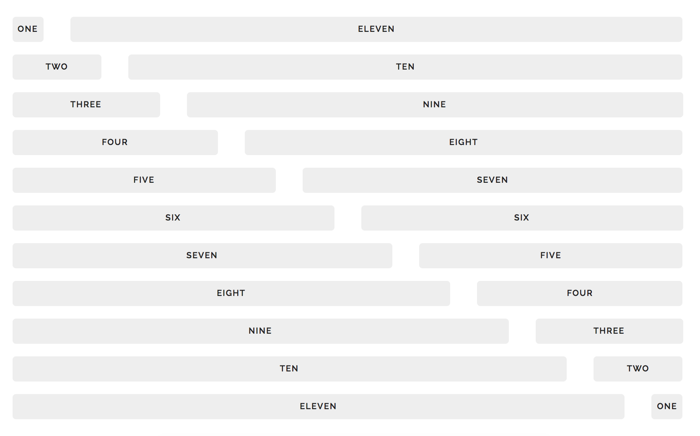

Frameworks
Färdig CSS
Färdiga classes som vi kan använda.
CDN
Content Delivery Network
Lokalt vs. remote
Hämtar css-en från en server varje gång
Opinionated
Inversion of control
Gör på det här sättet, då blir det enkelt, annars blir det svårt.
Ibland ingår js
Bootstrap
Foundation

CSS Frameworks
http://www.cssreflex.com/css-frameworks/
A directory of the best css frameworks, we have a total of 68 css frameworks in our database
Rows and columns

Bootstrap 4 responsive grid
.col-xs-*: < 554px.col-sm-*: > 554px.col-md-*: > 768px.col-lg-*: > 992px.col-xl-*: > 1200px
Allt ska bli 12 columner
Två columner på stor skärm: col-lg-6 + col-lg-6
Foundation grid
.small-* .columns.medium-* .columns.large-* .columns
Två columner på stor skärm: large-6 columns + large-6 columns
Skeleton grid
One
Eleven
Egenskriven CSS
Framework elements
Förutom grid-system får man oftast också klasser för:
Buttons : .btnForms: .form-*Responsive images: .img-fluidListsTypography
Länkar
https://v4-alpha.getbootstrap.com/
https://v4-alpha.getbootstrap.com/examples/
https://hackerthemes.com/bootstrap-cheatsheet/